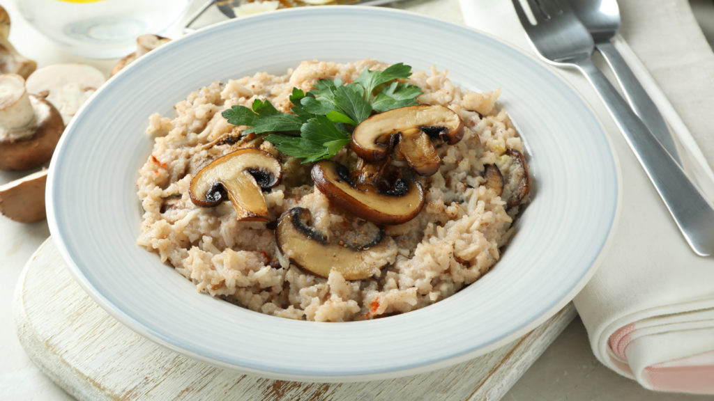
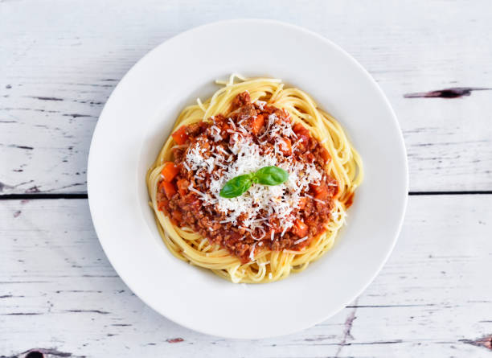

Arroz con pollo

El arroz con pollo es uno de los platos más populares de la cocina latinoamericana y europea. Está presente en las mesas familiares desde hace siglos, y cada país tiene su propia versión. Su encanto radica en su sencillez: ingredientes económicos, una sola olla y el aroma irresistible del arroz cocido con caldo, vegetales y trozos de pollo dorado. En esta nota, exploramos su origen, evolución y cómo se convirtió en un símbolo de la comida casera.
Rissotto

El risotto es un plato tradicional del norte de Italia, consistente en arroz cocinado lentamente con caldo hasta obtener una textura cremosa y suave, sin necesidad de nata. Se caracteriza por usar arroz de grano corto y alto en almidón (como Arborio o Carnaroli), que se sofríe y se cuece añadiendo caldo caliente gradualmente, removiendo constantemente
Fideos con salsa

Los fideos con salsa son un plato clásico y versátil que consiste en pasta (larga como espaguetis o tallarines, o corta como fusilli) cocida al dente y bañada en una salsa, comúnmente de tomate, boloñesa, crema o pesto. Es una comida rica en carbohidratos que proporciona energía y saciedad.